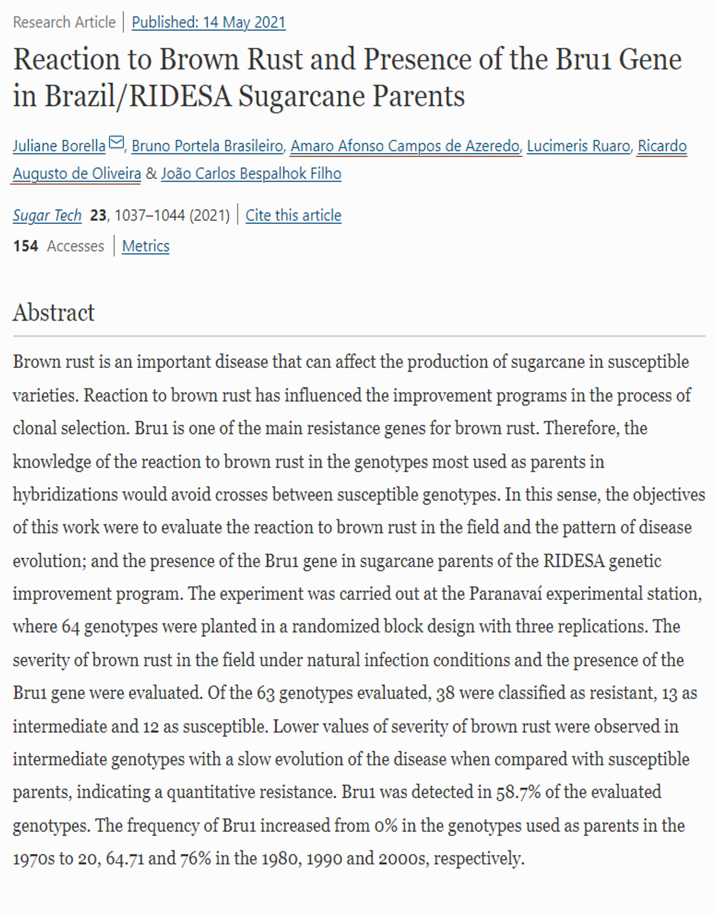

Universidade Federal do Paraná
Centro de Ciências Agrárias
Resultados Projeto de Pós-Doutorado
Pós-Doutorando: Dr. Amaro Afonso Campos de Azeredo
Supervisor: Prof. Dr. Ricardo Augusto de Oliveira
Maio de 2022
Campos dos Goytacazes, RJ (1986-2004)
Primeira Usina Particular
Frederico de Menezes Veiga
Areia, PB - CCA|UFPB (2006-2010)
Laboratório de Biotecnologia Vegetal
Monitoria Genética
Viçosa, MG - UFV (2011-2012)
Oratórios, MG - CECA
Viçosa, MG - UFV (2012-2017)
Paranavaí, PR - UFPR (2015)
Curitiba, PR - UFPR (2017-2022)
Paranavaí, PR (2017-2018)
Curitiba, PR (2018-2020)
2017 (1)
2020 (3)
2021 (1)

2022 (1)
-cursos feitos